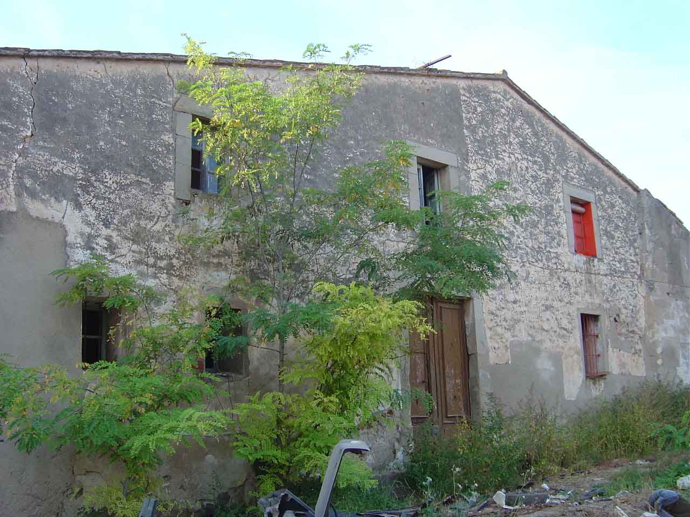
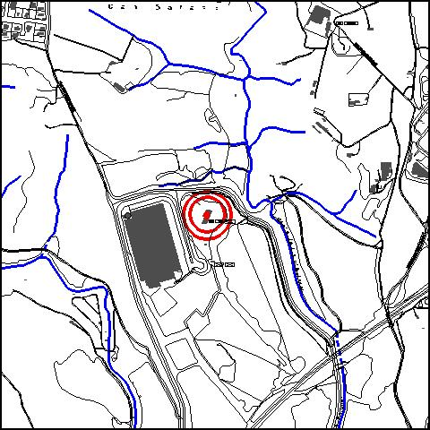

|  |  |
Nom de l’element: Ca n’Esteper
Clau d’identificació: A.11
Nucli o indret: Pol. Ind. Ca n’Esteper, al nord del c/ Ferrocarril i a l’oest del c/ Retorn.
UTM: X= 416.727, Y= 4.591.791, 100 m snm.
Règim del sòl: sòl urbà.
1.1. Època de construcció i tipologia:
Masia d’estil popular català, del segle XVII i restaurada al s. XX per un deixeble de Gaudí. Els murs són de terra i la coberta, a dues aigües, de teula i fusta. La seva façana està orientada al sud, presenta una planta baixa rectangular i una planta pis. La disposició de les obertures en façana segueix la simetria del carener a la part central. Aquestes obertures tenen dintells i brancals de pedra. La inclinació de la coberta s’allarga per tota la façana. S’han produït nous volums addicionats al cos principal. Té un rellotge de Sol a la façana. Està situada al costat de l’Ermita de Sant Joan de Benviure.
1.2. Estat de conservació:
Presenta un estat dolent de conservació.
1.3. Ús actual:
Sense ús. Actualment hi ha un cementiri de cotxes al voltant de la casa.
1.4. Accés:
Accés fàcil des del c/ Ferrocarril o des del c/ Retorn del Pol. Ind. de Ca n’Esteper.
Masia d’estil popular català del segle XVII, propera a l’Ermita de Sant Joan de Benviure.
3.1. Usos admesos:
Unihabitatge, residencial, hoteler (excepte aparthotel; i amb un màxim de 30 places), oficines i serveis, educatiu, recreatiu cultural i social, recreatiu de restauració, esportiu.
3.2. Condicions d’ordenació:
Segons Pla Especial a redactar.
3.3. Accés i serveis:
Accés des del c/ Ferrocarril o des del c/ Retorn del P.I. de Ca n’Esteper.
BCIL (Bé Cultural d’Interes Local)